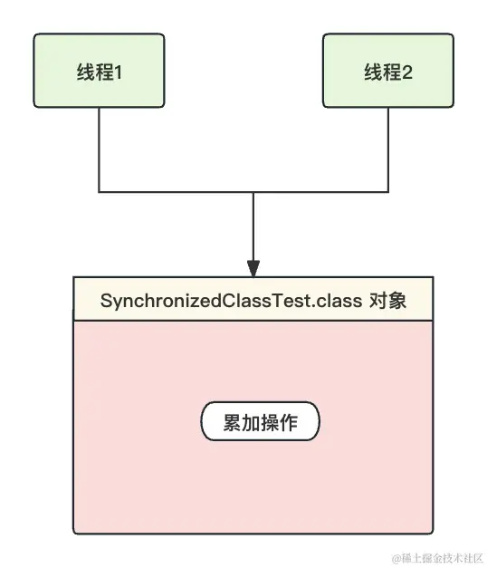
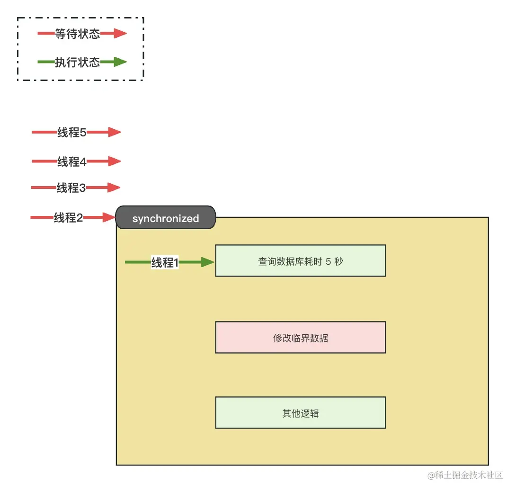
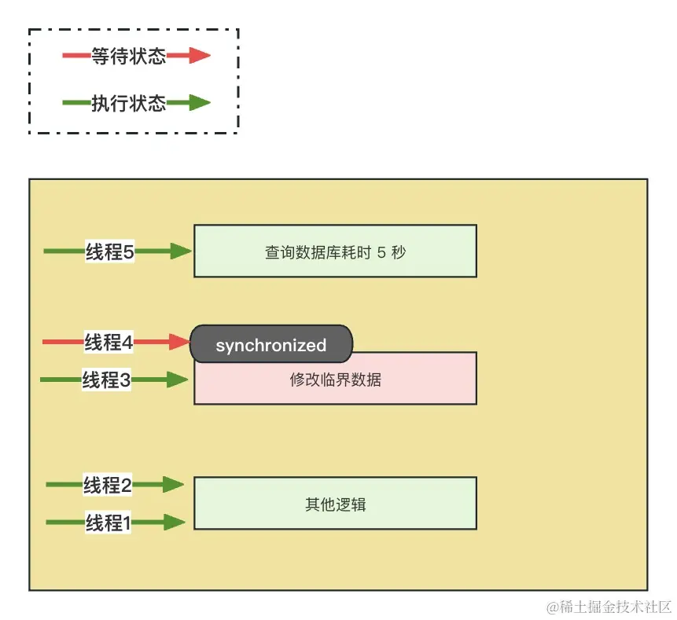
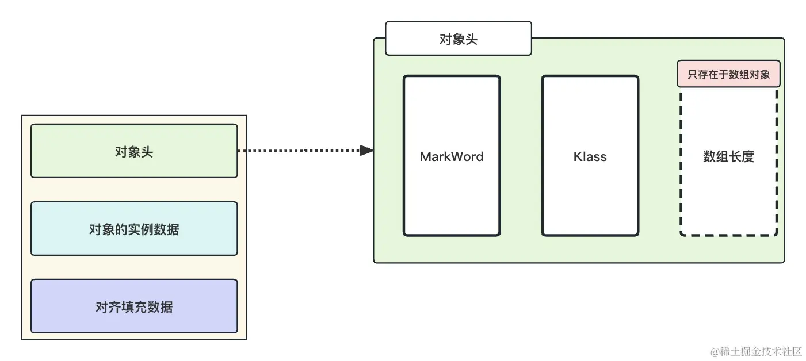

- 01 多线程初阶：解谜多线程世界.md.html
- 02 线程池掌故：管理并发的秘籍.md.html
- 03 锁的奥秘：synchronized 的秘密.md.html
- 04 锁的奥秘：Lock 接口的秘密.md.html
- 05 控制并发流程，并发的巧妙编织.md.html
- 06 ThreadLocal 之珍宝：线程的隐秘宝库.md.html
- 07 CAS：比肩而立的原子魔法.md.html
- 08 容器的魔力：并发世界的宝库.md.html
- 09 结果如何？线程的秘密告白.md.html
- 10 AQS：保证并发安全的终极奥秘（上）.md.html
- 11 AQS：保证并发安全的终极奥秘（中）.md.html
- 12 AQS：保证并发安全的终极奥秘（下）.md.html
- 捐赠
03 锁的奥秘：synchronized 的秘密
在当今计算机科学领域中，多核处理器和多线程编程已经成为常态。虽然多线程在提高性能和资源利用率方面具有巨大潜力，但同时也引入了一系列潜在的问题。其中最为关键的是并发安全问题。
本文将深入探讨 Java 中的锁机制，以解释并发安全问题的根本原因以及锁如何帮助我们解决这些问题。
一、并发安全问题的根本原因
首先，我们需要深入理解为何多线程会引发并发安全问题，而单线程操作通常不会。根本原因就在于并发性。
设想有一个不透明盒子，其中包含一个数字 5，同时有两个人 A 和 B 试图同时查看盒子内的数据并执行加 1 的操作，然后将计算结果写回盒子中。然而，我们会发现每个人的计算结果都是 6，而不是 7。这是一个典型的并发问题，因为它们都在看到数字 5 后，在各自的大脑中存储了数值 5，并执行了加 1 操作，因此最终的结果是错误的。
解决这个问题的方法有以下两种。
- 令牌方案： 我们可以引入一个令牌，只有持有令牌的人才能执行 +1 操作，然后将计算结果更新到 5 上。此时，5 变成了 6，然后归还令牌，让另一个人获取令牌后执行计算逻辑。
- 记录并对比方案： A 和 B 两个人在进行计算之前，首先记住原始的数值。在更新不透明盒子内的数据时，先比较不透明盒子里面的数据与自己之前记录的原始数值是否一致。如果一致，就更新盒子内的数据；如果不一致，就重新执行计算逻辑。
上述两种方案在 Java 中通常对应于经典的阻塞锁与 CAS 自旋锁。
由上面的例子，我们基本可以了解产生多线程并发问题的根本原因。
- 竞态条件： 多个线程尝试同时访问和修改共享资源时，由于执行顺序不受控制，可能导致不一致或意外的结果。这是因为线程在执行时可能相互干扰，而不是按照程序员预期的顺序执行。正如我们上面的例子，两个人的计算顺序不受控制，最终导致了计算结果的错误。
- 可见性问题： 一个线程对共享数据的修改可能不会立即被其他线程看到，导致数据不一致。这是由于现代计算机体系结构中的多级缓存和编译器优化引起的。我在上文强调了
不透明盒子，其中一个人修改了数据之后，另外一个人并不知道修改了什么，所以导致的计算结果的错误。 - 临界区问题： 临界区是指一段代码，其中对共享资源的访问受到限制，同时只允许一个线程访问。如果多个线程同时进入临界区操作数据，就可能导致数据损坏或不一致。上面的例子，修改盒子里面的数据这个动作就是临界区，两个人同时去修改，也会导致计算结果不一致。
这三个问题，是最基本的线程安全产生的原因。
二、保证并发安全的手段
我们通过上面的案例以及学习的产生多线程并发问题的根本原因可以得知，如果我们能够将竞态条件、可见性问题、临界区问题给解决掉，那么我们就能够对并发安全问题手拿把掐，后续我们将从两种手段来解决上述的三种问题。
1. final 关键字保证线程安全
我们上文学习到，并发安全问题是因为竞态条件下没有限制地修改临界区所产生的，那么假设我们将临界区变为不可修改，是不是就可以从根本上解决线程安全的问题？既然修改会产生问题，那么我就不让你修改！
在 Java 中，final 修饰的属性（字段或变量）可以帮助确保线程安全，因为 final 具有以下特性：
- 不可变性（Immutable）：
final属性一旦被赋予初值，就不能再被修改。这意味着其他线程无法更改这个属性的值。在多线程环境下，如果多个线程可以同时修改同一个变量，那么就会出现竞态条件和并发冲突，从而导致线程不安全。因为final属性的不可变性，所以能够彻底消除这种风险。 - 可见性保证：我们前文提到的可见性是保证属性在多线程环境下，修改时对于其他线程是可见的，但是因为 final 压根不可改变，所以这里不会存在可见性的问题。
总的来说，并发安全问题是因为修改产生的，那么我改都不让你改，你如何能够出现线程安全问题？
2. 线程锁保证线程安全
在前文中，我们已经了解到 final 修饰的方式适用于那些属性在对象创建后不需要修改的特定场景。然而，在实际应用中，许多情况下需要多线程对临界区数据进行修改。因此，我们将重点介绍第二种确保线程安全的方式，即使用线程锁。
为了保证线程安全，在 Java 中，JDK 官方提供了多种线程锁机制，涵盖了从原生的 synchronized 关键字到 Lock 接口的具体实现，包括 ReentrantLock、ReentrantReadWriteLock 等。这些机制能够有效地管理多线程对共享资源的访问，确保在任何时刻只有一个线程可以执行临界区代码，从而避免潜在的并发问题。
synchronized 和 Lock虽然都用于多线程编程中的同步，但它们并不是相互替代的关系，而是各自有其适用的情境和特点。特别是在 JDK 1.6 之后，随着引入轻量级锁和偏向锁，synchronized 的性能得到了显著提升。在一些对并发要求不高、需求不太复杂的场景中，synchronized 实际上并不比 Lock 差，反而可能是更好的选择。
这是因为在这些场景下，synchronized 更加简单直观。它隐含了锁的获取和释放过程，无需用户过多关心锁的释放问题，大大减少了代码的复杂性。对于不太复杂的开发需求，使用 synchronized 更容易理解和维护。
在一些简单的应用场景下，synchronized 的性能和易用性使其成为更好的选择。
在本章节中，我们将对synchronized关键字做一个具体的学习，在synchronized锁的分类中，我们大致可以将锁分为以下两种：
| 实现 | 锁分类 | 特性 |
|---|---|---|
| synchronized 关键字 | 类锁 | 独占、可重入、作用于整个类，影响类的所有实例 |
| 实例锁 | 独占、可重入、作用于实例，只影响同一个实例的线程访问 |
不过，在介绍 synchronized 关键字之前，我们需要先明晰独占特性和可重入特性的概念。
什么是独占特性？
独占锁是一种锁的模式，它在任意时刻只能被一个线程持有。当一个线程获得了独占锁，其他线程就无法同时获得相同的锁，它们必须等待当前持有锁的线程释放锁后才能获取。
独占锁的主要特点包括：
- 排他性：一次只能有一个线程持有独占锁，其他线程必须等待。
- 互斥性：如果一个线程持有独占锁，其他线程试图获取锁时会被阻塞，直到锁被释放。
什么是可重入特性？
可重入特性指的是同一个线程在持有锁的情况下，能够再次获取该锁，而不会发生死锁。这使得同一个线程可以多次进入由同一把锁保护的临界区域，而不会被阻塞。
可重入性的主要特点包括：
- 同一线程可多次获取锁： 如果一个线程已经获得了某个锁，那么在持有该锁的情况下，它可以再次获取相同的锁。
- 防止死锁： 可重入性避免了因为同一线程在持有锁的情况下无法再次获取锁而导致的死锁情况。
可重入性在编写复杂的程序时非常有用，尤其是当一个方法调用另一个加锁的方法时。如果锁不支持可重入性，这样的调用可能会导致死锁，因为同一线程在调用的过程中无法再次获取已经持有的锁。可重入特性可以保证同一个线程在同步块或锁的保护下多次调用被同一把锁保护的方法，而不会发生死锁。
了解了独占特性和可重入特性之后，我们下面将正式进入 synchronized 关键字的学习中去。
三、synchronized 使用
synchronized 是 Java 中的一个关键字，具有独占性、互斥性和可重入性。在 Java 中，它的作用范围可以是方法体声明或者代码块。
1. 类锁
类锁是全局唯一的，这主要是因为在 Java 中，每个类都对应一个 Class 对象，而这个 Class 对象在整个 JVM 中是唯一的。当使用 synchronized (ClassName.class) 时，锁定的就是这个唯一的 Class 对象。
下面我们将演示方法签名声明和代码块声明两种类锁的加锁方式。
方法签名声明锁
public class SynchronizedClassTest {
public static void main(String[] args) throws InterruptedException {
Task task = new Task();
Thread thread1 = new Thread(task, "线程1");
Thread thread2 = new Thread(task, "线程2");
thread1.start();
thread2.start();
thread1.join();
thread2.join();
System.out.println("最终的计算结果"+task.getCount());
}
private static class Task implements Runnable {
static int count = 0;
@Override
public void run() {
Task.addCount();
}
public static synchronized void addCount(){
for (int j = 0; j < 100000; j++) {
count++;
}
}
public int getCount() {
return count;
}
}
}
在上面的代码中，我们在静态方法的声明中直接声明了 synchronized，当静态方法直接声明 synchronized 的时候，JVM 会自动使用类锁的加锁方式。我们可以使用一个示意图来描述这个过程：

我们可以近似地理解为，线程是从 SynchronizedClassTest.class 这把锁里面进入后，再进行的累加操作，谁抢占到了这个锁谁去加，抢不到就等人家释放了再抢。
代码块声明锁
在方法签名声明的synchronized可能会带来更大的性能开销，因为进入和退出方法都需要进行锁的获取和释放操作。而在代码块级别，可以更灵活地控制锁的获取和释放时机，从而减小锁的开销。
我们假设存在 5 个线程执行任务，当关键字声明在方法签名上时，5 个线程的执行如下：

我们可以从图中看到，即使查询数据库和其他逻辑并不会出现线程安全问题，但是因为将 synchronized 声明在了方法签名上，导致无论谁来都只能等待上一个线程将任务执行完毕！
但是，如果我们只锁定会出现并发安全的逻辑，比如上图的修改临界区那一段逻辑就能大大地加快运行效率，比如下图：

使用代码块声明锁可以选择性地锁定方法内的一部分代码，从而缩小锁的粒度。这样其他线程就有更大的机会在不需要锁的部分执行，提高了并发性，它的具体使用如下：
public class SynchronizedClassTest {
public static void main(String[] args) throws InterruptedException {
Task task = new Task();
Thread thread1 = new Thread(task, "线程1");
Thread thread2 = new Thread(task, "线程2");
long currentTimeMillis = System.currentTimeMillis();
thread1.start();
thread2.start();
thread1.join();
thread2.join();
System.out.println("总耗时:" + (System.currentTimeMillis() - currentTimeMillis));
}
private static class Task implements Runnable {
@Override
public void run() {
try {
Task.simulate();
} catch (InterruptedException e) {
e.printStackTrace();
}
}
public static void simulate() throws InterruptedException {
System.out.println(Thread.currentThread().getName() + ": 开始查询数据库");
//模拟耗时
Thread.sleep(5000);
System.out.println(Thread.currentThread().getName() + ": 查询数据库结束");
synchronized (SynchronizedClassTest.class) {
System.out.println(Thread.currentThread().getName() + ": 开始修改临界区数据");
//修改临界区数据操作 模拟耗时
Thread.sleep(2000);
System.out.println(Thread.currentThread().getName() + ": 修改临界区数据结束");
}
System.out.println(Thread.currentThread().getName() + ": 开始执行剩余的逻辑");
Thread.sleep(3000);
System.out.println(Thread.currentThread().getName() + ": 执行剩余的逻辑成功");
}
}
}
上述代码大约只需要 10 秒左右就可以执行完毕，在相同的环境下，采用方法声明 synchronized 的方式下需要 20 秒左右。
总体来说，选择方法级别或代码块级别的synchronized应该根据具体的需求和场景。如果整个方法都需要被同步，那么方法级别的synchronized可能更方便。如果只有方法内的一小部分代码需要同步，而其他部分可以并发执行，那么代码块级别的synchronized可能更适合。
2. 实例锁
类锁的加锁方式是全局唯一的，也就是整个 JVM 只有这一把锁，就如我们上文提到的，锁的粒度太大了。如果我们能够把 class 对象实例化的对象作为锁对象，那么粒度就小了很多，因为一个 class 对象可以实例化无数个对象，这就是实例锁。
相比类锁，实例锁有以下的好处：
- 粒度更细：实例锁是针对实例对象的，每个实例对象都有自己的锁，因此可以更细粒度地控制并发访问。如果应用程序中有多个独立的实例，实例锁能够避免不同实例之间的锁竞争，提高并发性能。
- 更灵活：实例锁是实例级别的，不同实例之间互不影响，因此更灵活。不同实例可以并发执行，提高了并发性。
- 更容易避免死锁：由于实例锁只锁定当前实例，避免了不同实例之间的竞争，因此在设计和使用时更容易避免死锁的情况。
与类锁相同的是，实例锁也有方法声明和代码块加锁两种加锁方式，只要方法不是静态方法，那么将synchronized声明到方法签名中它自动就会使用当前实例作为实例锁，这里只演示代码块加锁的方式。
使用当前实例作为锁对象
使用当前实例作为锁对象，只需要使用 this 当作synchronized关键字的参数就可以了：
public class SynchronizedCodeTest {
public static void main(String[] args) throws InterruptedException {
Task task = new Task();
Thread thread1 = new Thread(task, "线程1" );
Thread thread2 = new Thread(task, "线程2" );
thread1.start();
thread2.start();
thread1.join();
thread2.join();
System.out.println( "最终的计算结果" +task.getCount());
}
private static class Task implements Runnable {
int count = 0;
@Override
public void run() {
for (int j = 0; j < 100000; j++) {
synchronized (this) {
count++;
}
}
}
public int getCount() {
return count;
}
}
}
使用其他对象作为锁对象
使用其他对象作为锁对象需要先创建一个对象，然后将该对象传递到synchronized关键字中，不同的synchronized关键字使用同一个锁对象代表这些synchronized使用的是同一把锁：
public class SynchronizedCodeTestOther {
public static void main(String[] args) throws InterruptedException {
Object lock = new Object();
Task task = new Task(lock);
Thread thread1 = new Thread(task, "线程1" );
Thread thread2 = new Thread(task, "线程2" );
thread1.start();
thread2.start();
thread1.join();
thread2.join();
System.out.println( "最终的计算结果" +task.getCount());
}
private static class Task implements Runnable {
private final Object lock;
int count = 0;
private Task(Object lock) {
this.lock = lock;
}
@Override
public void run() {
for (int j = 0; j < 100000; j++) {
synchronized (lock) {
count++;
}
}
}
public int getCount() {
return count;
}
}
}
上述的两种方式是在开发中最常用的两种方式，面对简单的并发场景下不用考虑太复杂的加锁逻辑，直接使用 synchronized 就可以了。对于性能而言，JDK 1.6 优化之后，synchronized 的性能也还不错，所以，简单的并发优先推荐这种方式！
四、synchronized 的优化
至此，相信你已经理解了 synchronized 的加锁原理，并且也可以用来应付后续的面试！不过，有关于 synchronized 的原理网上一抓一大把，这里不做太多过于细节的讲解，因为这对于大家来说反而会增大理解的难度。
我们上文说过，JDK 1.6 之后，对于 synchronized 做了很多优化，其中的重点就是锁的升级过程。在使用 synchronized 加锁的时候，Java 并不会直接调用操作系统内核加锁，而是根据线程的竞争情况采用不同的策略逐渐升级锁，直至调用操作系统加锁。
锁的升级包含以下几个过程：
- 调研发现，在大多数情况下，锁不仅不会存在竞争情况，而且通常会由同一个线程多次获取。在这种情况下，JVM 会将锁设置为偏向锁。偏向锁会在对象头中记录拥有偏向锁的线程的ID，并将锁标识位设置为偏向锁状态。这样，当同一个线程再次请求获取这个对象的锁时，不需要进行任何同步操作，可以直接获取到锁，提高了程序的性能。
- 另一种情况是，当线程B尝试获取偏向锁时，如果此时拥有偏向锁的线程A已经执行完毕并释放了锁，JVM 会尝试撤销偏向锁，并进行锁的竞争。如果在撤销偏向锁的过程中，没有其他线程来竞争锁，JVM 会将锁的状态设置为偏向线程B，并更新对象头中记录的线程ID为线程B的ID。在这种情况下，并不会发生锁的升级。只有当线程B尝试获取锁时，线程A还没有执行完毕，即出现了竞争情况，才会发生锁的升级，进而转为轻量级锁或重量级锁。
- 当系统线程出现多个线程竞争的情况时，synchronized 会从偏向锁升级为轻量级锁。需要注意的是，轻量级锁通常出现在竞争不激烈、任务执行时间短的情况下。当出现锁竞争时，例如线程A正在执行过程中，线程B开始尝试获取锁，此时synchronized会进行自旋等待。synchronized并不会立即升级为重量级锁，而是会尝试使用自适应自旋锁来获取锁。如果自旋一段时间后仍未获取到锁，synchronized会正式升级为重量级锁。
整体 synchronized 的锁升级过程为：偏向锁 -> 轻量级锁（自旋锁） -> 重量级锁。
为了帮助你理解这个过程，首先我们需要理解一个对象在存储空间的对象结构：

有关锁的信息被存储在了 MarkWord 中，这里以 64 位虚拟机为例，在不开启压缩的情况下，MarkWord 占用 64 位空间用于存储数据，具体存储如下：
| 锁状态 | 25 bit | 31 bit | 1 bit | 4 bit | 1 bit | 2 bit |
|---|---|---|---|---|---|---|
| 空闲空间 | 分代年龄 | 偏向锁 | 锁标志位 | |||
| 无锁 | 空闲 | hashCode值 | 0 | 01 | ||
| 偏向锁 | 线程id(54 bit)– + –偏向时间戳Epoch(2 bit) | 1 | 01 | |||
| 轻量级锁 | ptr_to_lock_record(62 bit) 栈中锁记录指针 | 00 | ||||
| 重量级锁 | ptr_to_heavyweight_monitor(62 bit) 互斥量指针 | 10 |
- 无锁状态：锁标志位为
01，此时不存在线程执行任务。 - 偏向锁：系统会在 MarkWord 中记录一个线程 id，当该线程再次获取锁的时候，无需再申请锁，直接获取以增加效率。
- 轻量级锁：系统会将对象头中的锁标志位修正为”00”，加锁和解锁操作使用CAS指令来修改锁标志位。当出现锁竞争的情况时，JVM 会尝试进行一段短暂的自旋（也称为空闲自旋或忙等待），以等待锁的释放。这个自旋过程是为了避免线程进入阻塞状态，以提高锁竞争的效率。
- 重量级锁：JVM 会尝试调用操作系统进行加锁，同时会将锁的标记位 CAS 修正为 “10” ，表示锁已经升级为重量级锁。没有抢占到锁的线程会被加入到系统内的等待队列中等待唤醒。
我们可以近似地理解，偏向锁和轻量级锁都是系统通过 CAS 修改对象头中的锁标记位来实现的，只有重量级锁才会调用操作系统内核进行加锁或者入队操作。一个是只需要修改点东西就能实现，一个是需要入队、阻塞、唤醒、出队等诸多步骤才能实现，谁快谁慢不言而喻！
以上就是 JDK 对于 synchronized 锁的优化，重量级锁相对而言太慢了，所以 JDK 官方才会采用一系列的动作借此完成对于锁的优化。
五、总结
在本章节中，我们深入探讨了 Java 中synchronized关键字的具体应用及其深层次的细节。
首先，我们详细介绍了synchronized的两种主要应用场景：类锁和实例锁。通过具体实例和案例分析，我们深入了解了在不同情境下选择合适的锁定方式的优缺点，有助于在实际应用中做出明智的选择。
随后，我们深入研究了 JDK 1.6 之后对synchronized的优化措施。这一部分内容包括了具体的优化实现和背后的原理，让你对 Java 虚拟机在提升synchronized性能方面的工作有了更深入的理解。我们强调了这些优化如何提高多线程程序的效率，并在实际项目中发挥积极作用。
特别地，我们详细描述了synchronized锁的升级过程，并解释了升级发生的原因。通过分析锁升级的各个阶段，你能够理解在并发编程中锁的状态如何随着程序执行而动态演变，从而更好地优化代码以避免潜在的性能瓶颈。
通过这章节的学习，相信你已经获得了对于synchronized更为深入、全面的认识，能够更自信、更有效地应对多线程编程中的挑战。在下一章节中，我们将对 Java 锁中最常用的 Lock 接口做一个详细的讲解和分析。
© 2019 - 2023 Liangliang Lee. Powered by gin and hexo-theme-book.